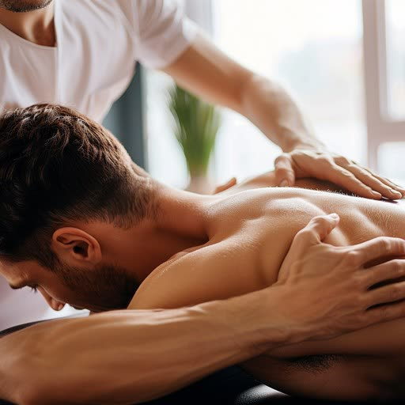
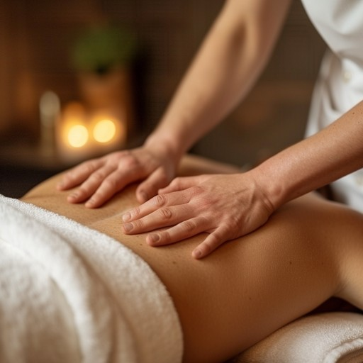

Zabiegi · Poznań
Od masaży częściowych po rytuały dla dwojga, masaże tajskie i zabiegi modelujące sylwetkę. Każdy zabieg zaczynamy od rozmowy, żeby dobrać technikę, tempo i nacisk do tego, czego potrzebujesz właśnie dziś.

Masaże ciałaSpokojny, głęboko odprężający rytuał z naturalnymi olejkami, który wycisza ciało i umysł.

Masaże ciałaUkierunkowana praca z napięciem i bólem — wsparcie dla kręgosłupa, karku i przeciążonych partii.
 Masaże ciała
Masaże ciała
Intensywna praca na głębszych warstwach mięśni i powięzi — dla uporczywych, nawracających napięć.
Masaże ciała
Przygotowanie do wysiłku i regeneracja po nim — praca na partiach obciążonych treningiem.
Masaże ciała
Delikatny masaż wspierający przepływ limfy, redukujący obrzęki i uczucie ciężkich nóg.
Masaże ciała
Ciepło bazaltowych kamieni rozluźnia mięśnie głębiej i szybciej niż same dłonie.
Masaże ciała
Dwie terapeutki pracujące w jednym rytmie — najgłębsze odprężenie w krótkim czasie.
Masaże ciała
Pełny rytuał: całe ciało, a po nim odprężający masaż twarzy. Nasza najdłuższa wizyta.
Masaże częściowe
Skoncentrowana praca na plecach — najczęstszy wybór przy siedzącej pracy.
Masaże częściowe
Krótka, celna sesja na kark i barki — ulga po dniu przed ekranem.
Masaże częściowe
Kark, barki i głowa — połączenie, które najszybciej rozbraja napięciowy ból głowy.
Masaże częściowe
Kark, barki, plecy i ramiona w jednej sesji — zaprojektowany pod pracę przy biurku.
Masaże częściowe
Dwadzieścia minut dla zmęczonych stóp — dobry dodatek do dłuższego zabiegu.
Dla dwojga
Dwa stoły w jednym gabinecie — wspólna chwila oddechu dla pary lub przyjaciółek.
Dla dwojga
Ten sam komfort wspólnej wizyty, ale z terapeutyczną pracą nad napięciami.
Dla dwojga
Najpełniejszy rytuał we dwoje — całe ciało i masaż twarzy w jednej wizycie.
Dla dwojga
Ciepłe kamienie bazaltowe dla obojga — rozgrzewająca wersja wizyty we dwoje.
Dla dwojga
Japoński masaż liftingujący twarzy — równolegle, w jednym gabinecie.
Masaże twarzy
Japoński lifting bez skalpela — intensywny masaż twarzy, szyi i dekoltu.
Masaże twarzy
Autorska technika naszego zespołu — modelowanie owalu i wygładzenie napięć mimicznych.
Masaże twarzy
Praca zewnętrzna i od wewnątrz jamy ustnej w jednej sesji — najgłębsze rozluźnienie twarzy.
Masaże twarzy
Praca od wewnątrz jamy ustnej — rozluźnia żuchwę i mięśnie odpowiedzialne za bruksizm.
Masaże twarzy
Kark i twarz traktowane razem — bo napięcie żuchwy rzadko kończy się na twarzy.
Masaże tajskie
Tradycyjna praca na macie — rozciąganie, ucisk punktów energetycznych i praca z oddechem.
Masaże tajskie
Refleksologiczna praca na stopach i podudziach — ulga po całym dniu na nogach.
Masaże tajskie
Stopy i głowa w jednej sesji — dwa końce ciała, w których najszybciej czuć odprężenie.
Antycellulitowe
Modelujący masaż wspierający ujędrnienie skóry i redukcję cellulitu.
Antycellulitowe
Masaż manualny połączony z presoterapią — praca modelująca i drenująca w jednej wizycie.
Zabiegi na ciało
Wibracja kompresyjna działająca na tkankę i układ limfatyczny. Dostępna również w pakietach 6 i 10 zabiegów.
Zabiegi na ciało
Uciskowy drenaż w specjalnym kombinezonie — ulga przy obrzękach i ciężkich nogach. Także w pakiecie 10 zabiegów.
Zabiegi na ciało
Zabieg laserowy wspierający redukcję lokalnej tkanki tłuszczowej. Dostępny w pakietach 6 i 10 zabiegów.
Zabiegi na ciało
Ultradźwięki kawitacyjne działające na tkankę tłuszczową — bez nacięć i bez rekonwalescencji.
Zabiegi na ciało
Kontrolowane wychłodzenie wybranej partii ciała — metoda pracy z uporczywym fałdem tłuszczowym.
Zabiegi na ciało
Radiofrekwencja połączona z podciśnieniem — ujędrnianie skóry i praca nad jej napięciem.
Zabiegi na ciało
Mechaniczny masaż podciśnieniowy głowicą LPG — wygładzanie skóry i wsparcie krążenia.
Nie wiesz, co wybrać?
Napisz lub zadzwoń — zapytamy o kilka rzeczy i zaproponujemy masaż, którego naprawdę potrzebujesz.